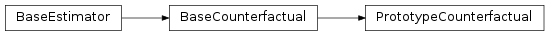

wildboar.explain.counterfactual¶
Functions¶
counterfactuals(): Compute a single counterfactual example for each samplescore(): Compute the score for the counterfactuals
-
wildboar.explain.counterfactual.counterfactuals(estimator, x, y, *, method='infer', scoring=None, valid_scoring=False, random_state=None, **kwargs)¶ Compute a single counterfactual example for each sample
- Parameters
estimator (object) – The estimator used to compute the counterfactual example
x (array-like of shape (n_samples, n_timestep) or (n_samples, n_dimension, n_timestep)) – The data samples to fit counterfactuals to
y (array-like broadcast to shape (n_samples,)) – The desired label of the counterfactual
method (str, optional) –
The method to generate counterfactual explanations
if ‘infer’, infer the most appropriate counterfactual explanation method based on the estimator
if ‘prototype’, compute model agnostic counterfactual explanations using the PrototypeCounterfactual method
scoring (str, callable, list or dict, optional) – The scoring function to determine the goodness of
valid_scoring (bool, optional) – Only compute score for successful counterfactuals
random_state (RandomState or int, optional) – The pseudo random number generator to ensure stable result
**kwargs (dict, optional) – Optional arguments to the counterfactual explainer
- Returns
x_counterfactuals (ndarray of shape (n_samples, n_timestep) or (n_samples, n_dimension, n_timestep)) – The counterfactual example.
valid (ndarray of shape (n_samples,)) – Indicator matrix for valid counterfactuals
score (ndarray of shape (n_samples,) or dict, optional) – Score of the counterfactual transform. Only returned if
scoringis not None
-
wildboar.explain.counterfactual.score(x_true, x_counterfactuals, metric='euclidean', success=None)¶ Compute the score for the counterfactuals
- Parameters
x_true (array-like of shape (n_samples, n_timestep)) – The true samples
x_counterfactuals (array-like of shape (n_samples, n_timestep)) – The counterfactual samples
metric (str, callable, list or dict, optional) –
The scoring metric
if str use metrics from scikit-learn
if list compute all metrics and return a dict where the key is the name of the metric and the value an ndarray of scores
if dict compute all metrics and return a dict where the key is the key and the value an ndarry of scores
if callable
success (ndarray of shape (n_samples)) – Indicator matrix of successful counterfactual transformations
- Returns
score – The scores
- Return type
ndarray or dict
Classes¶
ShapeletForestCounterfactual: Counterfactual explanations for shapelet forest classifiersKNeighborsCounterfactual: Fit a counterfactual explainer to a k-nearest neighbors classifierPrototypeCounterfactual: Model agnostic approach for constructing counterfactual explanations
-
class
wildboar.explain.counterfactual.ShapeletForestCounterfactual(*, epsilon=1.0, batch_size=1, random_state=10)¶ Counterfactual explanations for shapelet forest classifiers
-
paths_¶ A dictionary of prediction paths per label
- Type
dict
Notes
This implementation only supports the reversible algorithm described by Karlsson (2020)
Warning
Only shapelet forests fit with the Euclidean distance is supported i.e.,
metric="euclidean"References
- Karlsson, I., Rebane, J., Papapetrou, P., & Gionis, A. (2020).
Locally and globally explainable time series tweaking. Knowledge and Information Systems, 62(5), 1671-1700.
- Karlsson, I., Rebane, J., Papapetrou, P., & Gionis, A. (2018).
Explainable time series tweaking via irreversible and reversible temporal transformations. In 2018 IEEE International Conference on Data Mining (ICDM)
- Parameters
epsilon (float, optional) – Control the degree of change from the decision threshold
batch_size (float, optional) – Batch size when evaluating the cost and predictions of counterfactual candidates. The default setting is to evaluate all counterfactual samples.
random_state (RandomState or int, optional) – Pseudo-random number for consistency between different runs
Inheritance
-
fit(estimator)¶ Fit the counterfactual to a given estimator
- Parameters
estimator (object) – An estimator for which counterfactual explanations are produced
- Returns
- Return type
self
-
transform(x, y)¶ Transform the i:th sample in x to a sample that would be labeled as the i:th label in y
- Parameters
x (array-like of shape (n_samples, n_timestep) or (n_samples, n_dimension, n_timestep)) – The samples to generate counterfactual explanations for
y (array-like of shape (n_samples,)) – The desired label of the counterfactual sample
- Returns
counterfactuals (ndarray of same shape as x) – The counterfactual for each sample. If success[i] == False, then the value of counterfactuals[i] is undefined.
success (ndarray of shape (n_samples,)) – Boolean vector indicating successful transformations.
-
-
class
wildboar.explain.counterfactual.KNeighborsCounterfactual(random_state=None)¶ Fit a counterfactual explainer to a k-nearest neighbors classifier
-
explainer_¶ The explainer for each label
- Type
dict
References
- Karlsson, I., Rebane, J., Papapetrou, P., & Gionis, A. (2020).
Locally and globally explainable time series tweaking. Knowledge and Information Systems, 62(5), 1671-1700.
Inheritance
-
fit(estimator)¶ Fit the counterfactual to a given estimator
- Parameters
estimator (object) – An estimator for which counterfactual explanations are produced
- Returns
- Return type
self
-
transform(x, y)¶ Transform the i:th sample in x to a sample that would be labeled as the i:th label in y
- Parameters
x (array-like of shape (n_samples, n_timestep) or (n_samples, n_dimension, n_timestep)) – The samples to generate counterfactual explanations for
y (array-like of shape (n_samples,)) – The desired label of the counterfactual sample
- Returns
counterfactuals (ndarray of same shape as x) – The counterfactual for each sample. If success[i] == False, then the value of counterfactuals[i] is undefined.
success (ndarray of shape (n_samples,)) – Boolean vector indicating successful transformations.
-
-
class
wildboar.explain.counterfactual.PrototypeCounterfactual(background_x, background_y, *, metric='euclidean', metric_params=None, max_iter=100, step_size=0.1, n_prototypes='auto', target='auto', method='sample', method_params=None, random_state=None)¶ Model agnostic approach for constructing counterfactual explanations
-
estimator_¶ The estimator for which counterfactuals are computed
- Type
object
-
classes_¶ The classes
- Type
ndarray
-
partitions_¶ Dictionary of classes and PrototypeSampler
- Type
dict
-
target_¶ The target evaluator
- Type
TargetEvaluator
References
- Samsten, Isak (2020).
Model agnostic time series counterfactuals
Crate a new model agnostic counterfactual explainer.
- Parameters
background_x (array-like of shape (n_samples, n_timestep)) – The background data from which prototypes are sampled
background_y (array-like of shape (n_samples,)) – The background label from which prototypes are sampled
metric ({'euclidean', 'dtw'}, optional) – The metric used to move the samples
metric_params (dict, optional) –
Optional parameters to the metric
If ‘dtw’:
- rint or float, optional
The warping window size
max_iter (int, optional) – The maximum number of iterations
step_size (float, optional) – The step size when moving samples toward class prototypes
n_prototypes (int, float or str, optional) – The number of initial prototypes to sample from
target (float or str, optional) –
The target evaluation of counterfactuals:
if ‘auto’ the counterfactual prediction must return the correct label
if float, the counterfactual prediction probability must exceed target value
method ({'sample', 'shapelet', 'nearest', 'nearest_shapelet'}, optional) –
Method for selecting prototypes
if ‘sample’ a prototype is sampled among the initial prototypes
if ‘shapelet’ a prototype shapelet is sampled among the initial prototypes
if ‘nearest’ a prototype is sampled from the closest n prototypes
if ‘nearest_shapelet’ a prototype shapelet is sampled from the closest n prototypes
method_params (dict, optional) –
Additional parameters to the method
If ‘shapelet’ or ‘nearest_shapelet’
- min_shapelet_sizefloat, optional
Minimum shapelet size.
- max_shapelet_sizefloat, optional
Maximum shapelet size.
random_state (RandomState or int, optional) – Pseudo-random number for consistency between different runs
Inheritance
-
fit(estimator)¶ Fit the counterfactual to a given estimator
- Parameters
estimator (object) – An estimator for which counterfactual explanations are produced
- Returns
- Return type
self
-
transform(x, y)¶ Transform the i:th sample in x to a sample that would be labeled as the i:th label in y
- Parameters
x (array-like of shape (n_samples, n_timestep) or (n_samples, n_dimension, n_timestep)) – The samples to generate counterfactual explanations for
y (array-like of shape (n_samples,)) – The desired label of the counterfactual sample
- Returns
counterfactuals (ndarray of same shape as x) – The counterfactual for each sample. If success[i] == False, then the value of counterfactuals[i] is undefined.
success (ndarray of shape (n_samples,)) – Boolean vector indicating successful transformations.
-